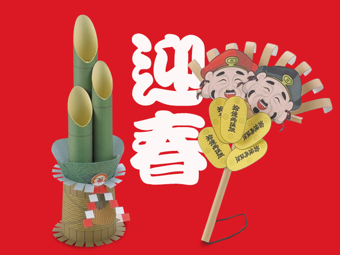
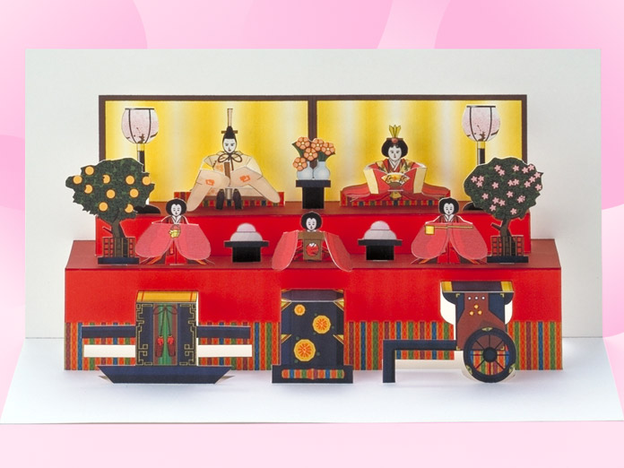
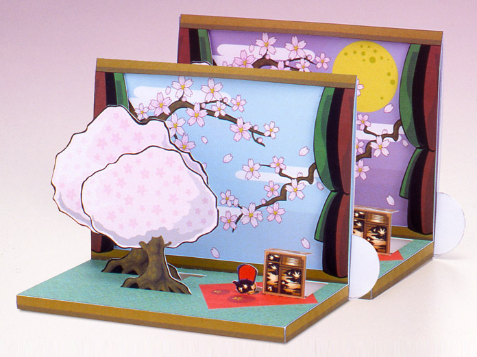
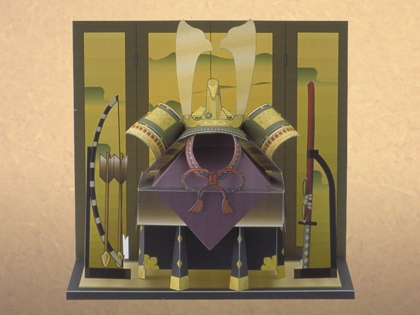
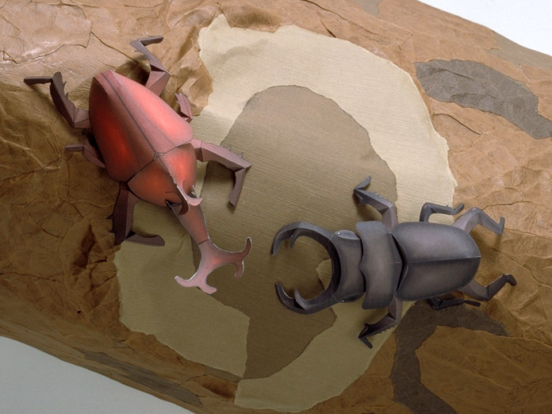
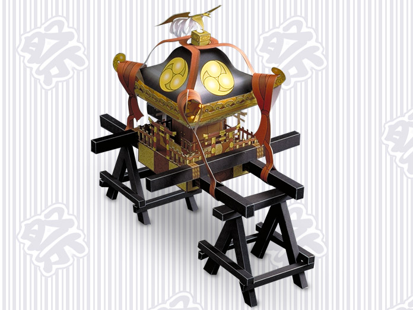
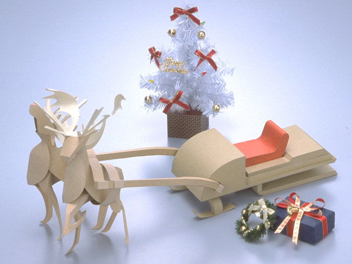

The Seasons
Paper crafts of seasonal icons in Japan. For beginners,families.
In our The Seasons series of paper craft models we have chosen subjects that express the changing of the year's seasons. Now we offer all the download data from this series in one complete collector's edition. Enjoy this wonderful collection of hand-crafted, Japanese seasonal icons with your family and friends.
New YearKadomatsu／Kumade

Yamaha has arranged a special package of New Year's presents such as paper craft models of a Kadomatsu and a Kumade. These are typical symbols seen anywhere in Japan during the New Year's season.
Kadomatsu :
Kadomatsu is a decoration consisting of a pair of pine trees and bamboo stems. It is placed on both sides of the front entrance of a house from January 1-7. It symbolizes that the tree provides longevity, prosperity and purity for the descent of the Gods.
Kumade :
Kumade literally means "Bear's hand." This tool is normally used as a broom for sweeping fallen leaves in Autumn. However, particularly during the New Year's celebration, this tool is believed to collect all happiness and wealth, and is mostly used now by people in business.
This data was released in January 1, 1998
Kadomatsu

PDF 222.7KB
Kumade
PDF 248.7KB
SetsubunMask of Oni
Setsubun is on February 3 and is the first day of Spring according to the lunisolar calendar. On the evening of this day, people open the doors of their houses and drive the demons (i.e. bad luck) out of their homes and gardens by throwing handfuls of dried soy beans and shouting "Demon out! Good luck in!"
This data was released in February 1, 1998
Mask of Oni - Japanese demons

PDF 161.2KB
Momo no sekkuHina Dolls

Hina Matsuri is on March 3. This "Festival of Dolls" (also called, "The Girl's Festival") is the day on which wishes are made for the future happiness of all girls. A set of dolls dressed in costumes, originally worn in the royal court in ancient times, are displayed with peach blossoms decorations.
This data was released in March 1, 1998
Hina Dolls
PDF 287.5KB/257.9KB
Spring FestivitiesHanami

The Japanese have long thought of the sakura (cherry blossom) as the flower which symbolizes the nation.
It is mentioned in ancient myths, and the way its petals fall while still at the height of their beauty was interpreted by the old warrior class as symbolic of resignation and grace in death, qualities which the warriors rated highly.
There are numerous cherry blossom viewing spots throughout the country and one of the pleasures of life among the Japanese is the chance to hold a sake drinking party beneath a grove of cherry trees in full bloom.
This data was released in April 1, 1998
Hanami - Cherry Blossoms
PDF 266.5KB/149.0KB
Tango no sekkuKabuto-Kazari

Tango no sekku (The Boy's Festival) is held on May 5. It is held to express hope that each boy in the family will grow up healthy and strong. Warrior figures are set up in the house during this festival, iris leaves are placed under the eaves to fend off evil, and huge fish-like streamers are fastened to poles. Special rice cakes wrapped in oak leaves are eaten on this day.
This data was released in May 1, 1998
Kabuto-Kazari
PDF 296.2KB/81.8KB
Tsuyu (The plum rain)Frog /Snail
As the rainy season hits, the Japanese islands are completely drenched with rain, from the end of spring to the beginning of summer. The plum fruits begin to ripen.
This lingering, gloomy, humid season is called "Nyubai" or "Tsuyu" which means "Plum rain". The frogs in the rice field sing for joy, croaking endlessly as the raindrops fall.
The snails enjoy their leisurely crawl over the moist leaves of the hydrangea.
You can almost feel the warmth of the sun-scorched summer soon to be upon us.
This data was released in may 1, 1998
Frog
PDF 156.7KB
Snail
PDF 165.4KB
InsectsAtlas beetle / Stag beetle

Summer is the time for enjoying yourself outdoors under the sun.
We may be drawn to scenes of sunbathing on the beach or cruising on the sea with the salty breezes.
Our hearts may turn inland and long for the fresh air of the mountains or the exhilaration of motorcycle touring.
But communing with the insects of the woods is also fun. Do you remember the joy of the moment when you caught your first cicada, firefly or stag beetle in a net as a child?
Let Yamaha's website revive those happy memories.
This data was released in July 1, 1998
Atlas beetle
PDF 156.9KB/179.3KB
Stag beetle
PDF 94.8KB/178.0KB
Autumn FestivalMikoshi

In Summer and Autumn, many area festivals are held all over Japan. There is game-playing, dancing, music and special food all for the festival.You might taste some sweet cotton candy or try catching goldfish! When the Mikoshi is coming, shouts of excitement are heard all over. "Wasshoi!" "Soina!" "Eiya!" Each district has a different, special call but the excitement of the participants and spectators is the same. Why don't you and your family try your hand at creating this special Japanese Mikoshi!
This data was released in August 1, 1998
Mikoshi - Festival Shrine
PDF 274.2KB/224.6KB
HalloweenJack-o-Lantern / Witch
Every year on October 31st, children stay up late for Halloween. They dress in costumes like witches or ghosts, and go door-to-door in their neighborhoods. They knock on doors, calling out, "Trick or treat!" collecting candy from their neighbors. The children wait all year for this special night when their delighted laughter echoes throughout the town.
Why don't you and your family try your hand at creating this fun and scary paper craft symbol of Halloween.
This data was released in October 1, 1998
Jack-o-Lantern
PDF 154.4KB/127.6KB
Witch
PDF 148.7KB/130.1KB
ChristmasReindeer, Sleigh and Christmas Card

A special Christmas present from Yamaha. We have made paper craft models of Santa Claus's reindeer and sleigh.
Download them to enjoy your own Christmas. Our original Christmas card is also available.
This data was released in December 1, 1997
Reindeer
PDF 61.4KB/165.2KB
Sleigh
PDF 102.7KB/114.3KB
Christmas Card
PDF 135.2KB
Top